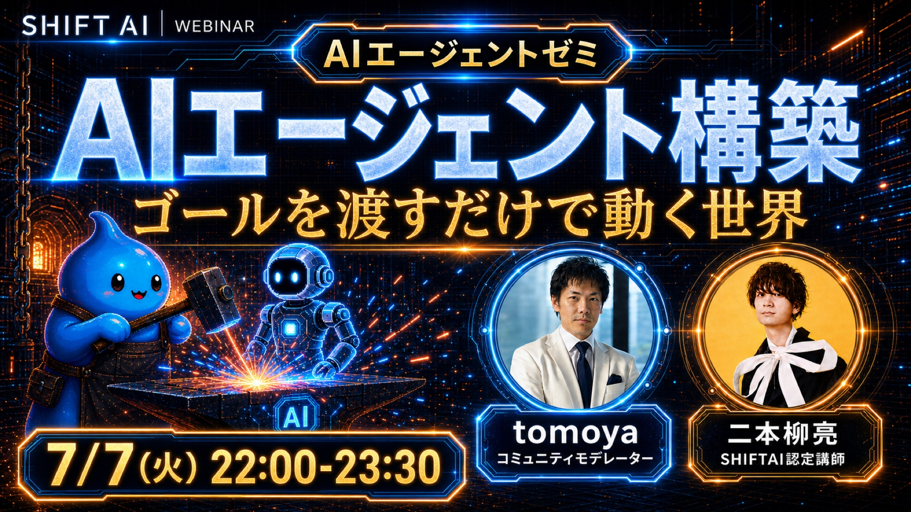
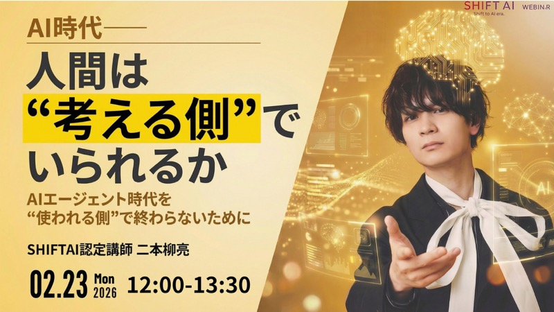
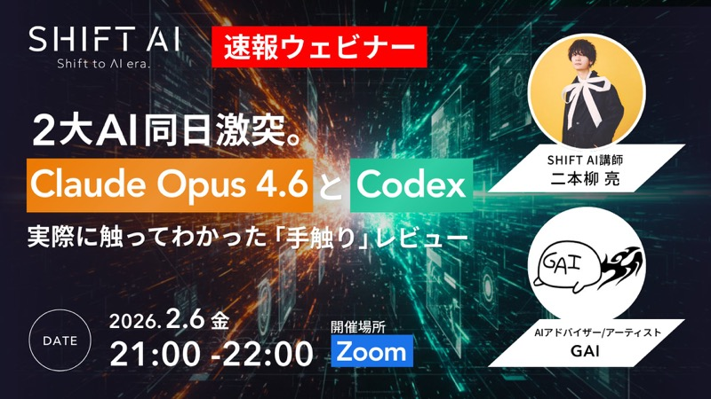
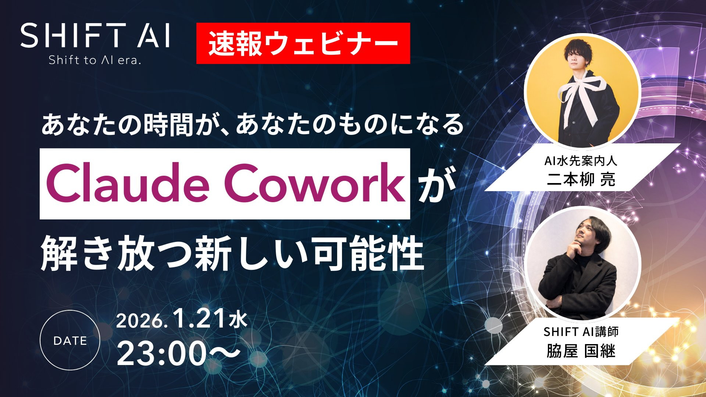
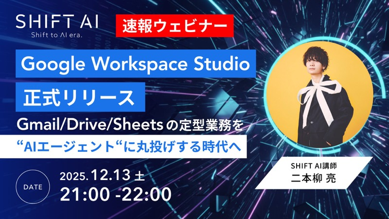
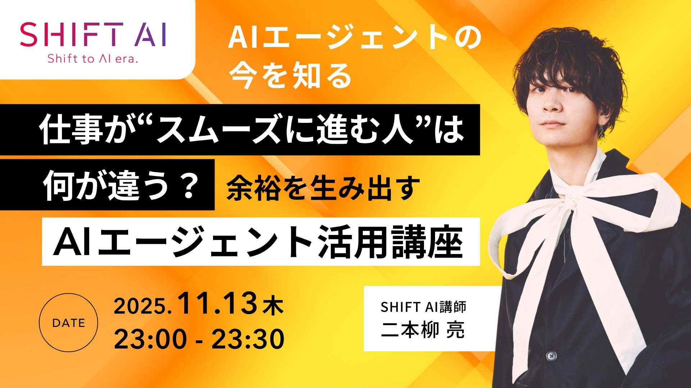

About
二本柳亮（にほんやなぎ りょう）。AIコンサルタントとして、企業のDX・生成AI活用に伴走しています。SHIFT AIで講師も務めていて、「説明がわかりやすい」「話しやすい」と言ってもらえることが多いです。
自分の役割は「水先案内人」だと思っています。答えを渡して終わりではなく、皆さんが自分たちで進めるようになるまで、地図を描きながら一緒に歩くこと。もともと音楽や動画制作の畑にいたので、技術の話を現場の言葉に翻訳するのが得意です。
AIエージェントゼミの設計・速報ウェビナー運営など、教える側としての実践経験が豊富です。
企業のAI活用推進を、ツール選定から現場の運用ルール作りまで一貫して支援します。
「伝える・場をつくる」を本職としてきた経験が土台。だから説明の順番や言葉選びに、変な迷いがありません。
Skills
相談から実装、定着まで。生成AI活用を「使えるもの」に変えるための4つの軸です。
月次の壁打ちから実装まで。課題の言語化に付き合い、社内にAIが根づくまで並走します。
契約書業務、メール対応、業務フローの可視化。「毎回手でやっていること」をAIに任せる仕組みづくり。
会員サイト構築、スプレッドシート連携CMS、データ分析基盤まで。作って終わりにしない設計。
SHIFT AI講師の経験を活かした、現場が「使える」と実感できる研修・勉強会の設計と実施。
Works
サイト構築から業務自動化まで、幅広い形でAI顧問として関わってきました。
ミュージカルカンパニー
アーティストコレクティブ
コンディショニングサロン
社名非公開
Process
いきなり大きく変えるのではなく、小さく試して確かめながら進めます。
現状の困りごとを、AIの知識ゼロ前提で気軽に話してください。課題の言語化から一緒にやります。
何をAI化すると効くか、優先順位と全体像を整理して、無理のないロードマップを提案します。
一番効果が見えやすいところから実装。動くものを早めに見て、方向を確かめながら進めます。
使い方の定着、社内展開、運用ルールまで。社内だけで回せるようになったらゴールです。
Speaking
速報ウェビナー・勉強会を中心に、最新のAIトレンドを現場の言葉で届けています。






Contact
DX・生成AI活用の進め方でお困りでしたら、お気軽にご相談ください。現状のヒアリングから始めます。
まずは30分程度のオンラインヒアリングからご案内しています